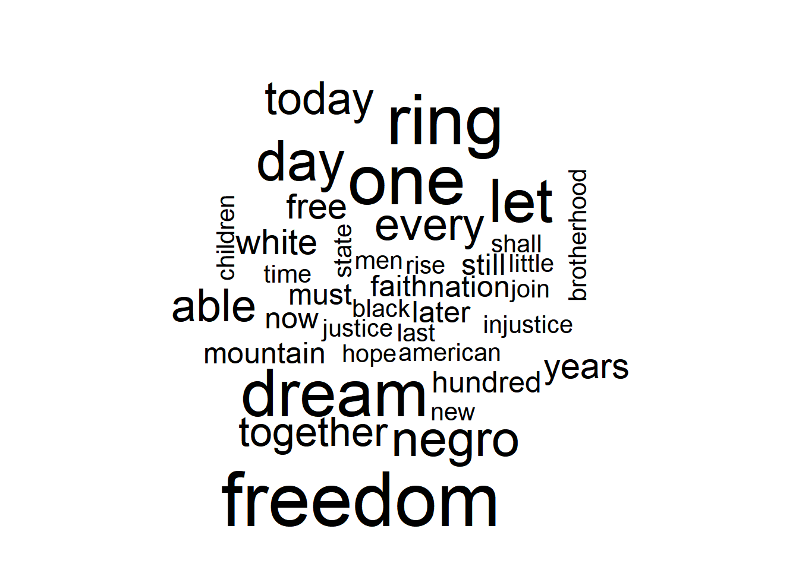
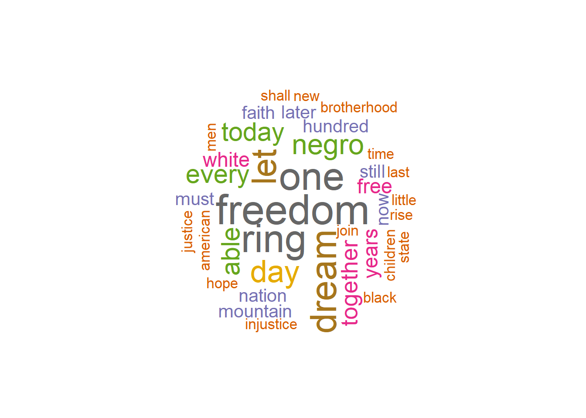

Show Hidden Code
# Install the easypackages package
#install.packages("easypackages")
library(easypackages)
# Load multiple packages using easypackage function "packages"
packages("XML","wordcloud","RColorBrewer","NLP","tm","quanteda", prompt = T)
# Download text data from website
mlkLocation <-URLencode("http://www.analytictech.com/mb021/mlk.htm")
# use htmlTreeParse function to read and parse paragraphs
doc.html<- htmlTreeParse(mlkLocation, useInternal=TRUE)
class(doc.html)[1] "HTMLInternalDocument" "HTMLInternalDocument" "XMLInternalDocument"
[4] "XMLAbstractDocument" Show Hidden Code
mlk <- unlist(xpathApply(doc.html, '//p', xmlValue))
mlk [1] "I am happy to join with you today in what will go down in\r\nhistory as the greatest demonstration for freedom in the history\r\nof our nation. "
[2] "Five score years ago a great American in whose symbolic shadow\r\nwe stand today signed the Emancipation Proclamation. This\r\nmomentous decree came as a great beckoning light of hope to\r\nmillions of Negro slaves who had been seared in the flames of\r\nwithering injustice. It came as a joyous daybreak to end the long\r\nnight of their captivity. "
[3] "But one hundred years later the Negro is still not free. One\r\nhundred years later the life of the Negro is still sadly crippled\r\nby the manacles of segregation and the chains of discrimination. "
[4] "One hundred years later the Negro lives on a lonely island of\r\npoverty in the midst of a vast ocean of material prosperity. "
[5] "One hundred years later the Negro is still languishing in the\r\ncomers of American society and finds himself in exile in his own\r\nland. "
[6] "We all have come to this hallowed spot to remind America of\r\nthe fierce urgency of now. Now is the time to rise from the dark\r\nand desolate valley of segregation to the sunlit path of racial\r\njustice. Now is the time to change racial injustice to the solid\r\nrock of brotherhood. Now is the time to make justice ring out for\r\nall of God's children. "
[7] "There will be neither rest nor tranquility in America until\r\nthe Negro is granted citizenship rights. "
[8] "We must forever conduct our struggle on the high plane of\r\ndignity and discipline. We must not allow our creative protest to\r\ndegenerate into physical violence. Again and again we must rise\r\nto the majestic heights of meeting physical force with soul\r\nforce. "
[9] "And the marvelous new militarism which has engulfed the Negro\r\ncommunity must not lead us to a distrust of all white people, for\r\nmany of our white brothers have evidenced by their presence here\r\ntoday that they have come to realize that their destiny is part\r\nof our destiny. "
[10] "So even though we face the difficulties of today and tomorrow\r\nI still have a dream. It is a dream deeply rooted in the American\r\ndream. "
[11] "I have a dream that one day this nation will rise up and live\r\nout the true meaning of its creed: 'We hold these truths to be\r\nself-evident; that all men are created equal.\" "
[12] "I have a dream that one day on the red hills of Georgia the\r\nsons of former slaves and the sons of former slave owners will be\r\nable to sit together at the table of brotherhood. "
[13] "I have a dream that one day even the state of Mississippi, a\r\nstate sweltering with the heat of injustice, sweltering with the\r\nheat of oppression, will be transformed into an oasis of freedom\r\nand justice. "
[14] "I have a dream that little children will one day live in a\r\nnation where they will not be judged by the color of their skin\r\nbut by the content of their character. "
[15] "I have a dream today. "
[16] "I have a dream that one day down in Alabama, with its vicious\r\nracists, with its Governor having his lips dripping with the\r\nwords of interposition and nullification, one day right there in\r\nAlabama little black boys and black girls will be able to join\r\nhands with little white boys and white girls as sisters and\r\nbrothers. "
[17] "I have a dream today. "
[18] "I have a dream that one day every valley shall be exalted,\r\nevery hill and mountain shall be made low, the rough places\r\nplains, and the crooked places will be made straight, and before\r\nthe Lord will be revealed, and all flesh shall see it together. "
[19] "This is our hope. This is the faith that I go back to the\r\nmount with. With this faith we will be able to hew out of the\r\nmountain of despair a stone of hope. With this faith we will be\r\nable to transform the genuine discords of our nation into a\r\nbeautiful symphony of brotherhood. With this faith we will be\r\nable to work together, pray together; to struggle together, to go\r\nto jail together, to stand up for freedom forever, )mowing that\r\nwe will be free one day. "
[20] "And I say to you today my friends, let freedom ring. From the\r\nprodigious hilltops of New Hampshire, let freedom ring. From the\r\nmighty mountains of New York, let freedom ring. From the mighty\r\nAlleghenies of Pennsylvania! "
[21] "Let freedom ring from the snow capped Rockies of Colorado! "
[22] "Let freedom ring from the curvaceous slopes of California! "
[23] "But not only there; let freedom ring from the Stone Mountain\r\nof Georgia! "
[24] "Let freedom ring from Lookout Mountain in Tennessee! "
[25] "Let freedom ring from every hill and molehill in Mississippi.\r\nFrom every mountainside, let freedom ring. "
[26] "And when this happens, when we allow freedom to ring, when we\r\nlet it ring from every village and hamlet, from every state and\r\nevery city, we will be able to speed up that day when all of\r\nGod's children, black men and white men, Jews and Gentiles,\r\nProtestants and Catholics, will be able to join hands and sing in\r\nthe words of the old Negro spiritual, \"Free at last! Free at\r\nlast! Thank God almighty, we're free at last!\" " Show Hidden Code
head(mlk, 3)[1] "I am happy to join with you today in what will go down in\r\nhistory as the greatest demonstration for freedom in the history\r\nof our nation. "
[2] "Five score years ago a great American in whose symbolic shadow\r\nwe stand today signed the Emancipation Proclamation. This\r\nmomentous decree came as a great beckoning light of hope to\r\nmillions of Negro slaves who had been seared in the flames of\r\nwithering injustice. It came as a joyous daybreak to end the long\r\nnight of their captivity. "
[3] "But one hundred years later the Negro is still not free. One\r\nhundred years later the life of the Negro is still sadly crippled\r\nby the manacles of segregation and the chains of discrimination. " Show Hidden Code
# Vectorize mlk
words.vec <- VectorSource(mlk)
class(words.vec)[1] "VectorSource" "SimpleSource" "Source" Show Hidden Code
# Check the class of words.vec
class(words.vec)[1] "VectorSource" "SimpleSource" "Source" Show Hidden Code
# Create Corpus object for preprocessing
words.corpus <- Corpus(words.vec)
inspect(words.corpus)<<SimpleCorpus>>
Metadata: corpus specific: 1, document level (indexed): 0
Content: documents: 26
[1] I am happy to join with you today in what will go down in\r\nhistory as the greatest demonstration for freedom in the history\r\nof our nation.
[2] Five score years ago a great American in whose symbolic shadow\r\nwe stand today signed the Emancipation Proclamation. This\r\nmomentous decree came as a great beckoning light of hope to\r\nmillions of Negro slaves who had been seared in the flames of\r\nwithering injustice. It came as a joyous daybreak to end the long\r\nnight of their captivity.
[3] But one hundred years later the Negro is still not free. One\r\nhundred years later the life of the Negro is still sadly crippled\r\nby the manacles of segregation and the chains of discrimination.
[4] One hundred years later the Negro lives on a lonely island of\r\npoverty in the midst of a vast ocean of material prosperity.
[5] One hundred years later the Negro is still languishing in the\r\ncomers of American society and finds himself in exile in his own\r\nland.
[6] We all have come to this hallowed spot to remind America of\r\nthe fierce urgency of now. Now is the time to rise from the dark\r\nand desolate valley of segregation to the sunlit path of racial\r\njustice. Now is the time to change racial injustice to the solid\r\nrock of brotherhood. Now is the time to make justice ring out for\r\nall of God's children.
[7] There will be neither rest nor tranquility in America until\r\nthe Negro is granted citizenship rights.
[8] We must forever conduct our struggle on the high plane of\r\ndignity and discipline. We must not allow our creative protest to\r\ndegenerate into physical violence. Again and again we must rise\r\nto the majestic heights of meeting physical force with soul\r\nforce.
[9] And the marvelous new militarism which has engulfed the Negro\r\ncommunity must not lead us to a distrust of all white people, for\r\nmany of our white brothers have evidenced by their presence here\r\ntoday that they have come to realize that their destiny is part\r\nof our destiny.
[10] So even though we face the difficulties of today and tomorrow\r\nI still have a dream. It is a dream deeply rooted in the American\r\ndream.
[11] I have a dream that one day this nation will rise up and live\r\nout the true meaning of its creed: 'We hold these truths to be\r\nself-evident; that all men are created equal."
[12] I have a dream that one day on the red hills of Georgia the\r\nsons of former slaves and the sons of former slave owners will be\r\nable to sit together at the table of brotherhood.
[13] I have a dream that one day even the state of Mississippi, a\r\nstate sweltering with the heat of injustice, sweltering with the\r\nheat of oppression, will be transformed into an oasis of freedom\r\nand justice.
[14] I have a dream that little children will one day live in a\r\nnation where they will not be judged by the color of their skin\r\nbut by the content of their character.
[15] I have a dream today.
[16] I have a dream that one day down in Alabama, with its vicious\r\nracists, with its Governor having his lips dripping with the\r\nwords of interposition and nullification, one day right there in\r\nAlabama little black boys and black girls will be able to join\r\nhands with little white boys and white girls as sisters and\r\nbrothers.
[17] I have a dream today.
[18] I have a dream that one day every valley shall be exalted,\r\nevery hill and mountain shall be made low, the rough places\r\nplains, and the crooked places will be made straight, and before\r\nthe Lord will be revealed, and all flesh shall see it together.
[19] This is our hope. This is the faith that I go back to the\r\nmount with. With this faith we will be able to hew out of the\r\nmountain of despair a stone of hope. With this faith we will be\r\nable to transform the genuine discords of our nation into a\r\nbeautiful symphony of brotherhood. With this faith we will be\r\nable to work together, pray together; to struggle together, to go\r\nto jail together, to stand up for freedom forever, )mowing that\r\nwe will be free one day.
[20] And I say to you today my friends, let freedom ring. From the\r\nprodigious hilltops of New Hampshire, let freedom ring. From the\r\nmighty mountains of New York, let freedom ring. From the mighty\r\nAlleghenies of Pennsylvania!
[21] Let freedom ring from the snow capped Rockies of Colorado!
[22] Let freedom ring from the curvaceous slopes of California!
[23] But not only there; let freedom ring from the Stone Mountain\r\nof Georgia!
[24] Let freedom ring from Lookout Mountain in Tennessee!
[25] Let freedom ring from every hill and molehill in Mississippi.\r\nFrom every mountainside, let freedom ring.
[26] And when this happens, when we allow freedom to ring, when we\r\nlet it ring from every village and hamlet, from every state and\r\nevery city, we will be able to speed up that day when all of\r\nGod's children, black men and white men, Jews and Gentiles,\r\nProtestants and Catholics, will be able to join hands and sing in\r\nthe words of the old Negro spiritual, "Free at last! Free at\r\nlast! Thank God almighty, we're free at last!" Show Hidden Code
# Turn all words to lower case
words.corpus <- tm_map(words.corpus, content_transformer(tolower))
# Remove punctuations, numbers
words.corpus <- tm_map(words.corpus, removePunctuation)
words.corpus <- tm_map(words.corpus, removeNumbers)
# How about stopwords, then uniform bag of words created
words.corpus <- tm_map(words.corpus, removeWords, stopwords("english"))
# Create Term Document Matrix
tdm <- TermDocumentMatrix(words.corpus)
inspect(tdm)<<TermDocumentMatrix (terms: 260, documents: 26)>>
Non-/sparse entries: 383/6377
Sparsity : 94%
Maximal term length: 14
Weighting : term frequency (tf)
Sample :
Docs
Terms 16 18 19 2 20 26 3 6 8 9
able 1 0 3 0 0 2 0 0 0 0
day 2 1 1 0 0 1 0 0 0 0
dream 1 1 0 0 0 0 0 0 0 0
every 0 2 0 0 0 3 0 0 0 0
freedom 0 0 1 0 3 1 0 0 0 0
let 0 0 0 0 3 1 0 0 0 0
negro 0 0 0 1 0 1 2 0 0 1
one 2 1 1 0 0 0 2 0 0 0
ring 0 0 0 0 3 2 0 1 0 0
today 0 0 0 1 1 0 0 0 0 1Show Hidden Code
m <- as.matrix(tdm)
wordCounts <- rowSums(m)
wordCounts <- sort(wordCounts, decreasing=TRUE)
head(wordCounts)freedom one ring dream let day
13 12 12 11 10 9 Show Hidden Code
# Create Wordcloud
cloudFrame<-data.frame(word=names(wordCounts),freq=wordCounts)
set.seed(1234)
wordcloud(cloudFrame$word,cloudFrame$freq)
Show Hidden Code
wordcloud(names(wordCounts),wordCounts, min.freq=3,random.order=FALSE, max.words=500,scale=c(3,.5), rot.per=0.35,colors=brewer.pal(8,"Dark2"))
Show Hidden Code
# Run the program on Winston Churchill's Finest Hour speech?
# http://www.historyplace.com/speeches/churchill-hour.htm